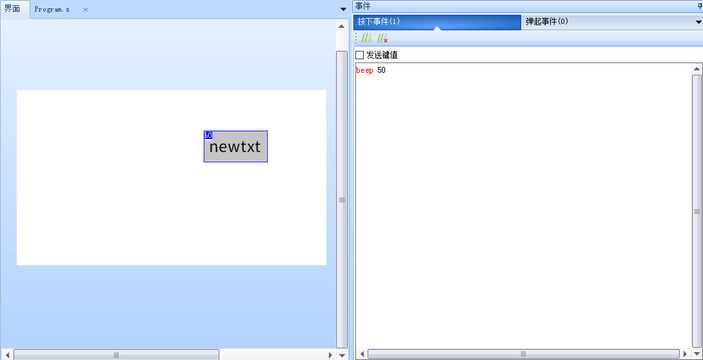
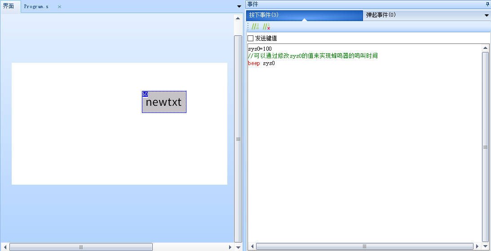

beep-蜂鸣器鸣叫
蜂鸣器只能在串口屏实物上使用，需要支持蜂鸣器的型号才能使用。
支持蜂鸣器的屏幕,屏幕背面会有黑色圆形或者黑色方形的蜂鸣器。请参考： 如何判断屏幕是否支持蜂鸣器
蜂鸣器的音量和频率无法调节,是固定的
beep time
time:时间，单位毫秒
beep-示例1
beep 50 //蜂鸣器鸣叫50ms

beep-示例2
sys0=100
//可以通过修改sys0的值来实现蜂鸣器的鸣叫时间
beep sys0

beep-c语言示例
单片机使用beep指令让串口屏蜂鸣器鸣叫100ms
//串口屏蜂鸣器鸣叫100ms
printf("beep 100\xff\xff\xff");
提示
仅带有蜂鸣器的型号支持,可通过查看串口屏背面电路板是否有蜂鸣器来判断
带喇叭的型号可以导入蜂鸣器的音效素材来实现类似蜂鸣器的功能
beep指令-样例工程下载
演示工程下载链接：